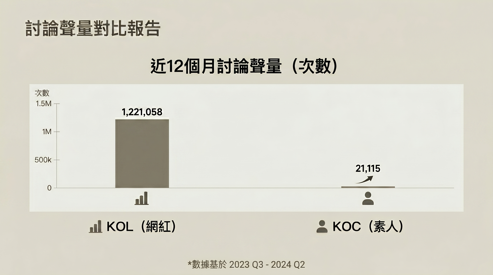
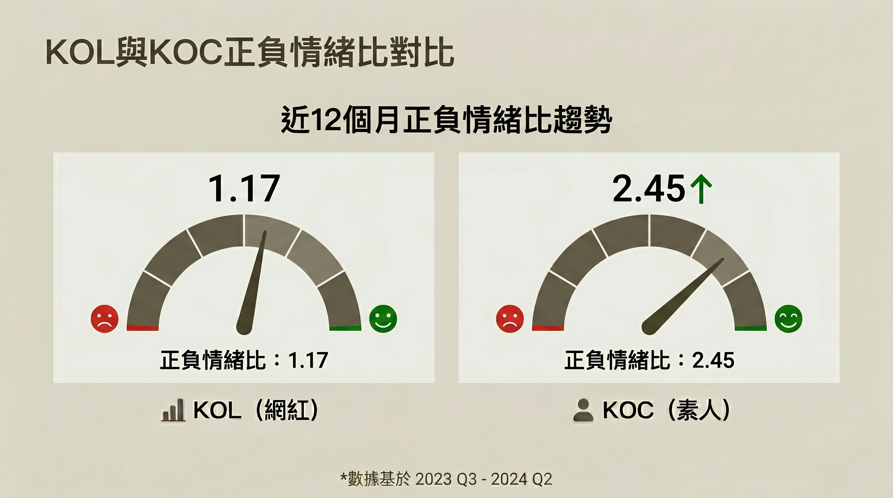

“數據說的故事
可能和你想的不一樣”
如果你曾經想過，行銷預算花出去，觸及、聲量有了，但不確定它有沒有真的在受眾心裡留下什麼，那這篇可能值得花三分鐘看一下。
大家都在追的那個數字
觸及率、曝光次數、討論聲量——這些是品牌行銷最常被拿來檢視的指標。
根據達摩數據，帶有業配、廣告合作、贊助語氣的內容，過去一年在網路上累積了超過 120 萬筆討論。

問題來了，傳到的是誰？
這個數字，說明了聲量這件事是做得到的。
但聲量之外，還有另一個角度值得一起看。那些討論，讓人留下的是什麼感覺？
另一組數字，同樣值得放進來看
同一份資料裡，帶有「素人推薦、真實心得、親身使用、用過才說」語氣的內容，聲量只有兩萬出頭——不到前者的 2%，但情緒正負比，是 2.45，是業配語氣內容的兩倍以上。

但把兩邊的情緒反應放在一起看，差距很明顯。
聲量差了 58 倍，但好感度，素人語氣是業配語氣的兩倍以上。
這不是說哪一種比較好。而是說，這兩件事在做不同的工——一個在擴大覆蓋，一個在累積好感。
聲量和好感度，是兩個可以同時追的目標。所以預算不建議只集中在其中一個。
很多品牌在規劃網紅合作時，粉絲數是第一個篩選條件。數字越大，觸及越廣，直覺上越划算。
但好感度這個維度，不一定跟著粉絲數走。
跟受眾生活更接近的創作者——就算粉絲少一點——說出來的話，有時候更容易讓人覺得「這跟我有關」。這種共鳴感，在數字上不一定顯眼，但它在影響決策。這值得我們重新想想，觸及廣度和共鳴深度，是兩件不同的事。
兩個目標，可以同時顧到
聲量和好感度不是非此即彼。
在規劃行銷組合時，把兩個維度都放進來考慮，哪些管道在擴大覆蓋，哪些在累積真實好感，預算的分配邏輯就會清晰很多。
一個人說好，和五十個人說好，留給受眾的印象不一樣。讓對的聲音出現在對的地方，有時候比單純衝大聲量更有效率。